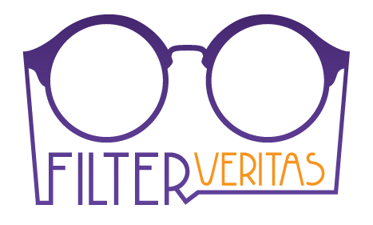

PLATFORM OF F.I.L.T.E.R. VERITAS SKOPJE
Every citizen is an activist, initiator of social, political, technological, economic change. Each one of us has the responsibility to conduct their own intellect, common sense, skill set, knowledge, attitude and creative potential towards creating opportunities for themselves and for the others. Each one of us has the right to be inspired from the diversity and plurality of the cultures, traditions, philosophies, theories, practices, perceptions. Each one of us has the obligation to challenge the paradigms of the [current] reality and share their ideals, visions, inventions. Each one of us is an advocate for themselves and for all the rest; for freedom, integrity and dignity, for life. Movements, networks, changes, turnovers, quests… new truths, justified and legitimate.
VISION of F.I.L.T.E.R. is to be an active instigator and catalyst of changes, movements, initiatives and actions towards:
- transformation of the existing society into a just and sustainable civil society, where the citizens are active, aware, conscious and responsible, permanently devoted towards an overall social progress, development and welfare
- citizens who understand and respect the distinctiveness and uniqueness of the individuals and the specific social groups, and stand for social culture of sustainability and diversity development
- citizens who are aware and educated about their universal and inviolable human rights, the way of their personal fulfillment and protection in their everyday life
- citizens driven by the values of freedom, equality and social justice in their own individual and in their socio-political life and existence
- citizens with unfolded critical thought, common sense and autonomous thinking
- citizens who, motivated by their knowledge and practical skills, lend their voice to peacefulness, cooperation and mutual assistance
- citizens who are aware of, and use their influence and power for establishing a sovereign and democratic country, based on the principles of constitutional state [rechtsstaat] and the rule of law, which exists and functions in order to act structurally towards civil, social and humane growth
- citizens who appreciate and improve their home, place of residence, the community and the country they are part of, led by the principles of thriftiness, appropriateness,rationality, sustainability and unobtrusiveness of the environment and the nature as such.
MISSION of F.I.L.T.E.R. is through activism, work and programme activities of the Association to:
- increase the socio-political participation of the citizens and to contribute to developing a critical, prudent thought and the capability of filtering and verifying the information prior to forming beliefs and attitudes;
- creating opportunities - individual, for the community and for the humanity;
- identifying, managing and developing the creative potential of the individuals and the groups.
In order to accomplish its vision and mission and to contribute to the broader social interests and benefits, the Association is committed to fulfill its long-term AIMS and OBJECTIVES:
- Judicious and proactive action regarding the implementation, respect and protection of the rights and freedoms of the human and the citizen
- Advocate, support and contribute vis-a-vis realizing the direct and indirect sovereignty of the people
- Encouraging the active involvement of the citizens regarding their direct participation in the decision-making process in the local governments
- Taking constant and consistent programme activities and practices about raising the awareness and understanding of the civil society and the political culture, and their role and significance in the people’s daily lives
- Taking constant and consistent programme activities and practices towards promoting the concept of active citizenship
- Judicious and proactive action with regards to the development of independent and critical thought and expansion of the citizens’ creative potential.
There are SIX CORE VALUES in the work, organizational culture and social projection of the Association.
- FOCUS > adaptability | estimation | attention | awareness | mastery | concentration | mindfulness | preparation | perspective | paradigms | clarity | precision | speed | dynamics | momentum | sharpness > RETHINK
- IMAGINATION > curiosity | humor | resourcefulness | vision | fun | authenticity | originality | creativity | exploring | transformation | inventiveness | ingenuity | reuse, reinvent | outside-of-the-box | nonconformity > ENVISION
- LEADERSHIP > example | expectations | experience | encouragement | attitude | behavior | energy | enthusiasm | connection | initiate | motivate | inspire | flexibility | responsibility | improvement | mindset > EMPOWER
- TRANSPARENCY > integrity | honesty | openness | open source | sharing | ideas | works | simplicity | independence | truth | autonomy | inviolability | justification > EDUCATE
- EMPATHY > compassion | helpfulness | gratitude | collaboration | support | fairness | dignity | respect | trust | love | acceptance > UNDERSTAND
- RESULT > perseverance | aspiration | values | articulation | purpose | intentionality | balance | action | reliability | accountability | commitment | sustainability | excellence > ACT